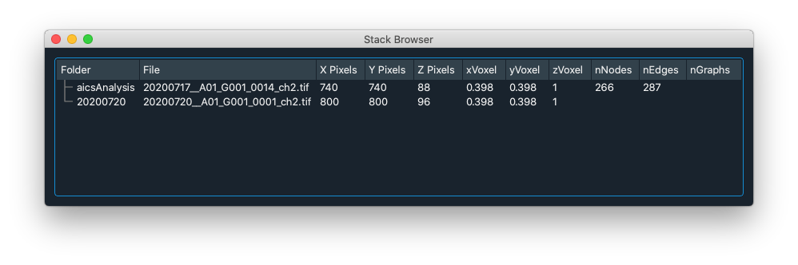
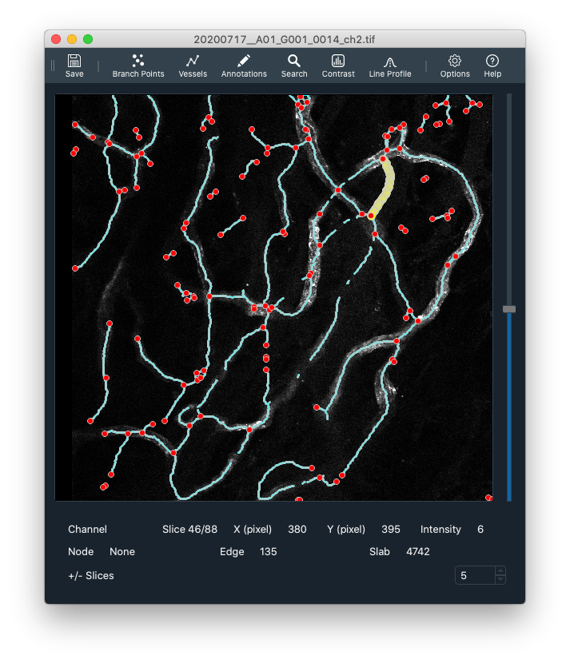
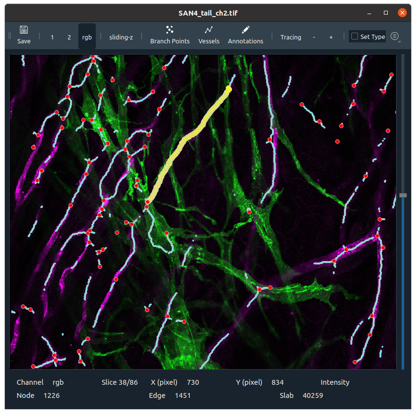
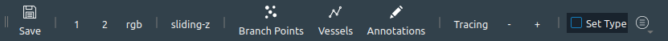
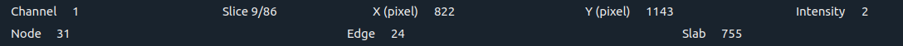
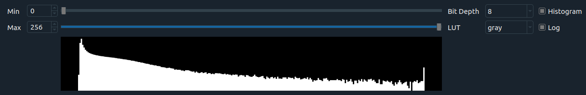
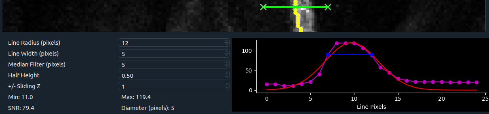
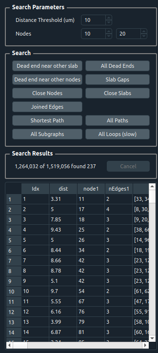
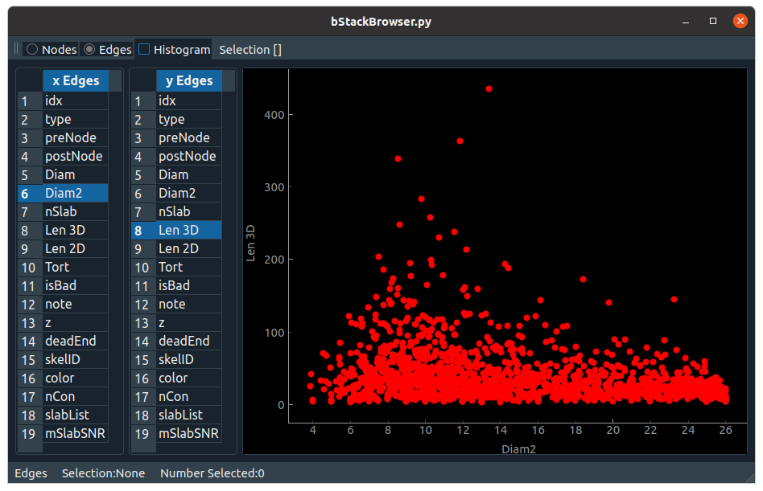

Interface
Stack Browser
The stack browser is the main interface window to load Tiff files.
Drag and drop Tiff files into the stack browser and double-click to open a stack-window.

Stack Window
Example 1 
Example 2

Toolbars
Each stack window has a number of toolbars.
Main
The main toolbar is always at the top of each stack window.

- Save - Save the tracing as a .h5f file
- '1' - Display channel 1
- '2' - Display channel 2
- rgb - Display multi channel tiff as RGB
- sliding-z - Display channel as a small z-projection for each slice
- Branch Points. Display a list of branch points.
- Vessels. Display a list of vessels (vessels are segments between branch points)
- Annotations. Display annotations. Annotations are added with a+click
- Tracing. toggle the tracing on and off
- '-': Decrease the tracing size
- '+': Increase the tracing size
- Set Type: Use keyboard 0,1,2,... to set selected object type (usually keyboard 1,2,3 switches channel)
- Hamburger: Dropdown menu to set toggle toolbars, set options, and display this help.
Status
The status toolbar is at the bottom of each stack window. It reports the current channel, image slice, cursor/mouse position, intensity, and any selected annotation objects.

Contrast

Line Profile

Search

Plots

Editing
a + Click, Add an annotation Shift + Click, Add a branch point e + click, Add an edge (New edge will go from selected node to clicked position or connect to another existing branch point)
left-click, Select an object Del, delete selected object
Keyboard
| Keyboard | Right-Click Menu | Action |
|---|---|---|
| 1/2/3 | View Image Color Channel | |
| rgb | View multichannel RGB Image | |
| c | Contrast | Toggle Image Contrast Panel |
| l | Line Profile | Line Profile |